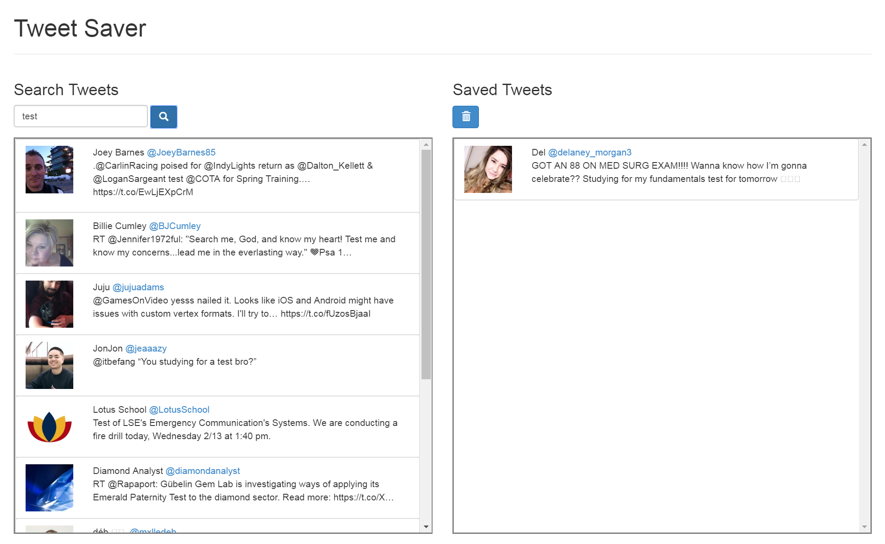

My Projects

Work Learn Sitemore_vert
Created a web site that enables users to manage a to-do list and insert what they learned about each task.
Card Titleclose
Created with Grails
React Weather Channelmore_vert
Website that shows the weather pattern for the next few days.
React Weather Channelclose
- Created using React
Roll-a-Ball Scare Gamemore_vert
Created a modified version of the roll-a-ball tutorial that would scare the user at the end of the game using Unity.
Card Titleclose
Created in Unity

Tweet Savermore_vert
Created a web page that would display JSON data as well as have persistent browser states.
Tweet Saverclose
Created using Angular 2.0
Recycling Bin Gamemore_vert
Gamified a recycling bin at UBC to test if gamification would affect consumer recycling habits.
Recycling Bin Gameclose
- Acted as team leader to spread tasks among the team, act as primary contact to clients and lead team meetings.
- Designed the software architecture with one other engineer and developed a modular and efficient system.
- Implemented various software classes using the Python programming language.
Phone Lock Mechanismmore_vert
Created a prototype Android application that featured our incredibly secure phone unlocking design. Won multiple class awards.
Phone Lock Mechanismclose
- Designed a proof of concept Android application, with 2 other students, that required a user to unlock the application.
- Implemented an algorithm that will verify a swipe gesture to be a valid unlocking sequence and grant access if so.
- Presented the project to classmates and industry sponsors to explain the significance of our changes in security.